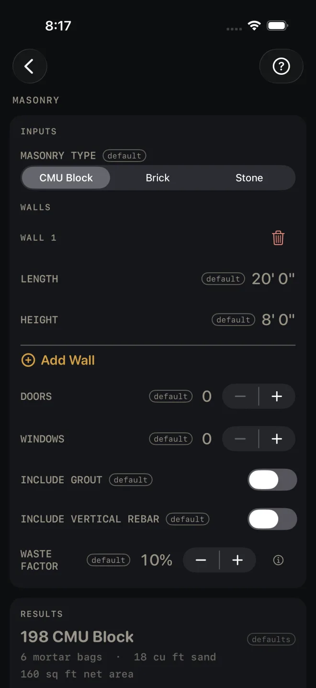
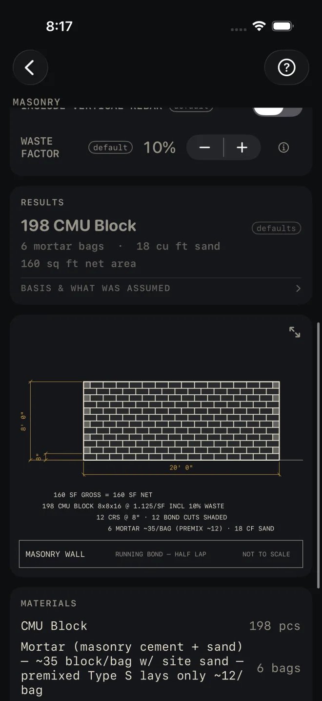

Masonry
What it's for
Counts the units for a block, brick or stone wall job: one wall or several, less the doors and windows. You get the unit count, mortar bags and sand, grout bags and vertical rebar for block if you ask for them, a coursed elevation of the first wall, and a material list. It is a takeoff. It does not check the wall against code.
Step by step
The example is the screen as it opens: one CMU block wall, 20' 0" long and 8' 0" high, no openings, 10% waste.

1 2 3 4 5- Pick MASONRY TYPE: CMU Block, Brick or Stone. It sets how many units go in a square foot and how far a bag of mortar goes.
- Under WALLS, enter LENGTH along the face of Wall 1 and HEIGHT from the top of the footing to the top of the last course.
- Tap Add Wall for each further wall and enter its length and height. The red trash button removes a wall. All the walls are added into one takeoff.
- Set DOORS and WINDOWS with − and +. Each one takes a fixed allowance off the wall area. The screen does not ask for opening sizes.
- For block, turn on INCLUDE GROUT to get core-fill bags. A GROUT CORES row appears: the percent of cores you will fill, from 5% to 100% in 5% steps. Turn on INCLUDE VERTICAL REBAR to get bar footage, and pick REBAR SPACING from 8″ OC to 48″ OC. Neither row shows for Brick or Stone.
- Set WASTE FACTOR. It is applied to the unit count, the grout and the rebar. Mortar and sand are figured from the unit count, so they carry it too.
- Read RESULTS. On the defaults: 198 CMU Block, 6 mortar bags · 18 cu ft sand, 160 sq ft net area.
Reading the results

8 10 11 13- The headline is the number of units to buy, waste included. It is dimmed and tagged defaults until you change an input.
- Mortar and sand are on the next line. A grout line and a rebar line, with the spacing, appear only when those options are on. Net area is the wall area after the door and window allowances.
- The drawing is a coursed elevation of Wall 1 only. With more than one wall it says WALL 1 OF … SHOWN — TOTALS COVER ALL WALLS. Pinch to zoom and use the expand button for full screen. See Drawings.
- The notes under the drawing are where you check what was assumed. BASIS & WHAT WAS ASSUMED states the yields behind them: the area taken off per door and window, units per square foot by type, mortar and grout per bag, and the rebar rule. The first line is the area sum, and it shows what came off for each door and window. The second gives the unit size and the units per square foot used, here 8x8x16 at 1.125/SF, with the waste. The third is the coursing: the number of courses and how many cut units are shaded on the elevation. The fourth gives the mortar basis. For block it reads ~35/BAG (PREMIX ~12): the bag count is for masonry cement mixed with site sand, and premixed mortar lays far fewer block per bag. With grout on, a grout line gives its basis the same way.
- A red coursing note means the wall height is not a whole number of courses and the top course is a cut. It reads FULL CRS + TOP CUT with the size of the cut. Change HEIGHT to a course multiple if you can.
- MATERIALS lists the units in pieces, mortar in bags, sand in cubic feet, then grout bags and rebar in lineal feet when they are on.
Masonry is a Pro calculator. SHARE PDF and SAVE are Pro
as well, a one-time purchase. SHARE PDF and the list button beside it stay grey until you have entered your own
measurements. SAVE stays lit, but until then a tap only answers Enter your job's numbers first
and saves nothing.
Common mistakes
- Buying premixed mortar against the bag count. Read the mortar note on the drawing: the count assumes masonry cement and site sand.
- Expecting big openings to come off in full. A garage door is one DOORS count, the same allowance as a man door. For an odd opening, leave it out of the count and take the units off by hand.
- Leaving GROUT CORES at its starting value when you are filling every core, or only the rebar cores. Set the percent to match the job.
- Reading the elevation as the whole job. It draws Wall 1. The counts cover every wall in the list.
Related
- Concrete — the footing under the wall
- Retaining Wall — segmental block walls
- Excavation
- Drawings
- Cut sheets and templates — what SHARE PDF sends
- Saving and history